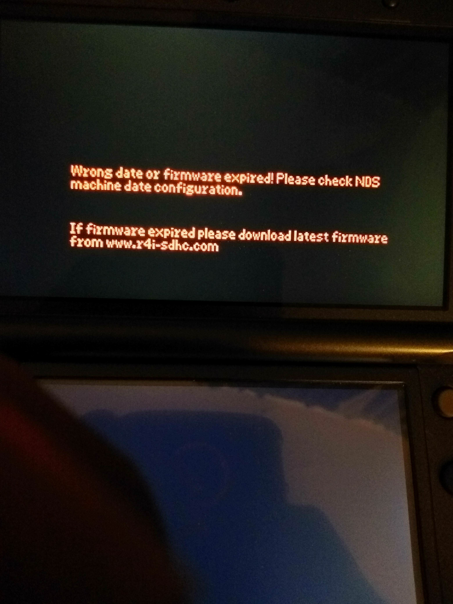

Timebombs are not as scary as people make them out to be!
Many people seem to have the wrong idea about timebombs and how they function. I have made this page to describe what they are and how they work!
Which carts include these timebombs?
A small handful! But if that's the case, why is it talked about so much?
Well, the timebomb carts ended up being popular carts! A few years ago, if you looked for a new R4 card on eBay, you would be greeted with pages of timebomb carts from r4isdhc.com.
Carts from these manufacturers included timebombs in their stock kernel:
- r4isdhc.com (2014+ carts only)
- r4i-sdhc.com carts
- r4i-gold.com carts (versions: v1.4-1.4.4)
- r4i-gold.eu carts
It's likely that it was the same company making them all, but I don't really have much proof to show that this is the case.
Aside from when r4isdhc.com's domain expired and the kernel was moved to r4i-sdhc.com (and ended up breaking after an "update").
They are all DSTTi clones, or as they like to call it, 'DEMON' carts - DEMON was probably an internal codename of sorts, though it's very fitting!
As far as I know, not all DEMON carts had timebombs.
How do timebombs really work?
Timebombs are built into the stock kernel of the carts that include them.
If you are using the kernel which the manufacturer of a timebomb cart provides, you will see that after a specific date has passed, the cart will give you an error in red text!
Here is a picture of this error:

Photo from HomebrewJay on GBATemp
But that's all it does, prevent the cart from loading after a specific date.
- It does not brick the cart
- It does not prevent the cart from being seen by the console
- It does not delete files on your micro SD card
- It does not damage your console
There are ways around these timebombs on the affected carts:
-
Set your date and time to before the timebomb.
Most people set their date and time back to 2009, it shouldn't cause major issues unless you want to be in the current year.
-
Install YSMenu - Timebomb carts are usually supported by YSMenu, though double check that this is the case for your cart before installing.
Some people do not like the look of YSMenu, if that's the case for you, either change the skin or;
-
Install Twilight Menu ++ - You need to install YSMenu first, but after that,
you can follow the instructions found here to install twilight menu onto your flashcard.
But I think I have proven my point, timebombs aren't as scary as people think, it's just a small message telling you to update.
Why do timebombs exist?
To be honest, there isn't really a clear answer. I've heard theories that it's to make more money - people see the error and think the cart is broken so they buy a new one.
Or it could just be a reminder to update - where in some cases the update is never provided - who knows!